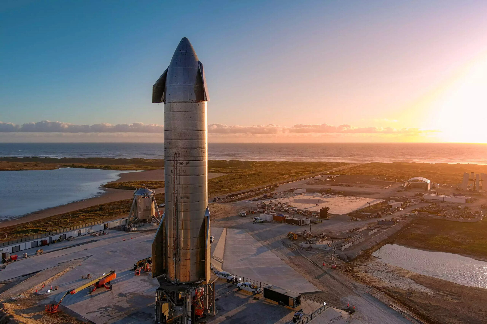

1. Describe la situación que se está desarrollando en cada una de las fotografías como anexo 1.
Segun lo que yo veo el niño esta estudiando online lo cual le permite tener acceso a mucha informacion de manera rapida y eficaz.
Lo que yo veo es que uan familia esta en la mesa, comiendo pero son ciberdependientes, lo cual es malo cuando ya se vuelve una adiccion a las aparatos inteligentes, por esa razon la comida que esta en la mesa se deja aparte en la mesa.
Se muestra como muchas personas interactuan en una fiesta, lo cual si lo anexamos con la tecnologia, ahora es muy normal las reuniones entre amigos online.
Se muestras como dos niños desde muy jovenes ya empiezan en la ciencia.
2. Es común encontrar cotidianamente estas situaciones ¿Por qué?
De hecho ahora es muy comun encontrar estas situaciones ya que a diaro hoy en dia la tecnologia y la ciencia esta en todas partes, por ejemplo lo mas comun ahora es lo del niño estudiando online, ya que por la pandemia del Covid-19, casi todos los estudiantes del mundo les tocó empezar a estudiar online para prevenir los contagios de la enfermedad.
3.¿Cuáles crees que han sido los principales avances de la ciencia y la tecnología en la actualidad?
Se que en la actualidad han habido muchos avances tecnologicos pero uno de los que me perece mas importante es el de la nasa con SpaceX, que lograron hacer que los cohetes ahora aterricen y asi de una manera u otra hacer mas economicos los viajes espaciales para en un futuro lograr volverlo comercia.
4. ¿En qué forma crees que estos avances han beneficiado o perjudicado a la sociedad en general?
Este avance creo que beneficia demasiado a la sociedad de hoy en dia para que el ser humano ya tenga en unas decadas la posibilidad de tener otros lugares de viajes que no sean dentro de nuestro planeta.